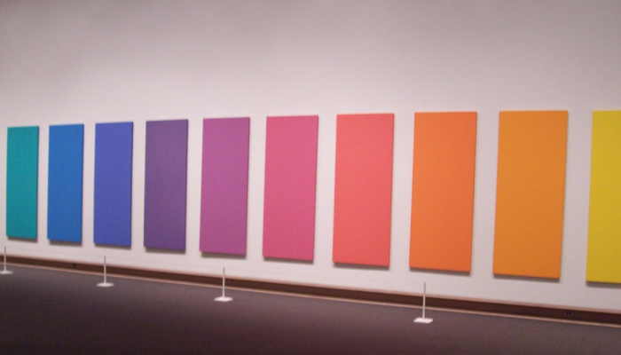
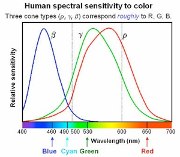

Spectrum

Here we remix 31 greyscale photos taken at 10 nm separation in wavelength between 400 nm and 700 nm. The result is an image who’s illumination can be adjusted dynamically post-capture.
Input

The input consists of several of these greyscale pictures. Each one represents the intensities at a certain wavelength band 10 nm wide between 400 and 700 nm.
The data is available here.
Each photo is multiplied by a user-specified wavelength profile that represents a custom illumination source.

In our interface, the custom illumination is defined by a traceable grey graph.
The original intensity images multiplied by the custom illumination wavelength profile is then multiplied by three Guassians I used to approximate the color response of a human eye.

Here is the program in action. The scenes are a fake vs real lemon slice and fake vs real peppers. The first two curves I draw represent daylight and a mercury vapor lamp. The rest are arbitrary.

This is the original source I used for the RGB response curves for the human eye.
The mathematical approximation isn’t perfect, but hopefully it’s good enough.
Process
Results